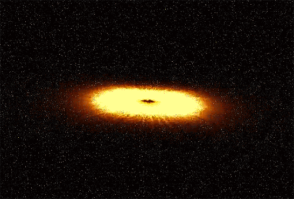

A supernova is a powerful and luminous stellar explosion. This transient astronomical event occurs during the last evolutionary stages of a massive star or when a white dwarf is triggered into runaway nuclear fusion. The original object, called the progenitor, either collapses to a neutron star or black hole, or is completely destroyed. The peak optical luminosity of a supernova can be comparable to that of an entire galaxy before fading over several weeks or months.Supernovae are more energetic than novae. In Latin, nova means "new", referring astronomically to what appears to be a temporary new bright star. Adding the prefix "super-" distinguishes supernovae from ordinary novae, which are far less luminous.

The word supernova was coined by Walter Baade and Fritz Zwicky in 1929. The most recent directly observed supernova in the Milky Way was Kepler's Supernova in 1604, but the remnants of more recent supernovae have been found. Observations of supernovae in other galaxies suggest they occur in the Milky Way on average about three times every century. These supernovae would almost certainly be observable with modern astronomical telescopes. The most recent naked-eye supernova was SN 1987A, the explosion of a blue supergiant star in the Large Magellanic Cloud, a satellite of the Milky Way.Theoretical studies indicate that most supernovae are triggered by one of two basic mechanisms: the sudden re-ignition of nuclear fusion in a degenerate star such as a white dwarf, or the sudden gravitational collapse of a massive star's core. In the first class of events, the object's temperature is raised enough to trigger runaway nuclear fusion, completely disrupting the star. Possible causes are an accumulation of material from a binary companion through accretion, or a stellar merger. In the massive star case, the core of a massive star may undergo sudden collapse once it is unable to produce sufficient energy from fusion to conteract the star's own gravity. While some observed supernovae are more complex than these two simplified theories, the astrophysical mechanics are established and accepted by the astronomical community.

Supernovae can expel several solar masses of material at speeds up to several percent of the speed of light. This drives an expanding shock wave into the surrounding interstellar medium, sweeping up an expanding shell of gas and dust observed as a supernova remnant. Supernovae are a major source of elements in the interstellar medium from oxygen to rubidium. The expanding shock waves of supernovae can trigger the formation of new stars. Supernova remnants might be a major source of cosmic rays. Supernovae might produce gravitational waves, though thus far, gravitational waves have been detected only from the mergers of black holes and neutron stars. Astronomers classify supernovae according to their light curves and the absorption lines of different chemical elements that appear in their spectra. If a supernova's spectrum contains lines of hydrogen (known as the Balmer series in the visual portion of the spectrum) it is classified Type II; otherwise it is Type I. In each of these two types there are subdivisions according to the presence of lines from other elements or the shape of the light curve (a graph of the supernova's apparent magnitude as a function of time).